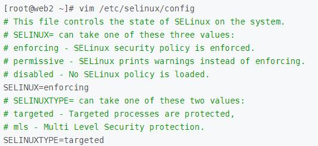

SElinux
Security Enhanced Linux 美国国家安全局(NSA=TheNational Security Agency)和SCC(Secure Computing Corporation)开发的Linux的一个强制访问控制的安全模块
DAC：Discretionary Access Control自由访问控制
MAC：Mandatory Access Control 强制访问控制
相比其他强制性访问控制系统，SELinux 有如下优势：
控制策略是可查询而非程序不可见的。
可以热更改策略而无需重启或者停止服务。
可以从进程初始化、继承和程序执行三个方面通过策略进行控制。
控制范围覆盖文件系统、目录、文件、文件启动描述符、端口、消息接口和网络接口。
SELinux工作类型
四种工作类型：
strict: centos5,每个进程都受到selinux的控制
targeted: 用来保护常见的网络服务,仅有限进程受到selinux控制，只监控容易被入侵的进程，centos4只保护13个服务，centos5保护88个服务
minimum：centos7,修改的targeted，只对选择的网络服务
mls:提供MLS（多级安全）机制的安全性
targeted为默认类型，minimum和mls稳定性不足，未加以应用，strict已不再 使用
安全上下文
传统Linux，一切皆文件，由用户，组，权限控制访问
在SELinux中，一切皆对象（object），由存放在inode的扩展属性域的安全元素所控制其访问
安全上下文是 SELinux 的核心。
安全上下文我自己把它分为「进程安全上下文」和「文件安全上下文」。
一个「进程安全上下文」一般对应多个「文件安全上下文」。
只有两者的安全上下文对应上了，进程才能访问文件。它们的对应关系由政策中的规则决定
所有文件和端口资源和进程都具备安全标签：安全上下文（security context）
需要注意的是，单纯的移动文件操作并不会改变文件的安全上下文。
安全上下文有五个元素组成：
user:role:type:sensitivity:category
user_u:object_r:tmp_t:s0:c0
user：指示登录系统的用户类型,进程
Role：定义文件，进程和用户的用途
Type：指定数据类型
Sensitivity：限制访问的需要，由组织定义的分层安全级别
Category：对于特定组织划分不分层的分类
SElinu模式
配置文件 /etc/selinux/config

getenforce 查询模式状态
setenforce 0 开启Permissive 只发出警告信息
setenforce 1 开启Enforcing ，记录警告且阻止可疑行为，文件权限多个.
Disabled 与 Permissive 或者 Enforcing 需要重启计算机
禁用SElinux
CentOS7 /boot/grub2/grub.cfg 下面启动选项最后添加selinux=0为禁用
/etc/selinux/config
SELINUX=disabled
查询文件或目录的安全上下文
ls -Z
ls -Z /etc/hosts
-rw-r--r--. root root system_u:object_r:net_conf_t:s0 /etc/hosts
修改SELinux安全标签
给文件打标
chcon [OPTION]... [-u USER] [-r ROLE] [-t TYPE] FILE...
chcon [OPTION]... --reference=RFILE FILE...
-R：递归打标
chcon -R -t public_content_t /data
恢复目录或文件默认的安全上下文：
restorecon [-R] /FILE
修改SELinux安全规则
semanage port -a -t http_port_t -p 9527
-a 增加
-t type
-p 端口号
semanage port -m -t ssh_port_t -p 9527
-m 修改
-t type
-p 9257
注意：修改端口时，端口需事先存在
semanage port -d -t ssh_port_t
-d 删除
SELinux布尔值
getsebool -a 显示系统所有的布尔值
semanage boolean -L
setsebool 设置指定的boolean值
示例
setsebool ftpd_anon_write=1
-P 永久更改boolean值
SELinux日志
/var/log/audit/audit.log
整理并分析日志
sealert -a
SElinux帮助
yum install selinux-policy-devel
yum install selinux-policy-doc